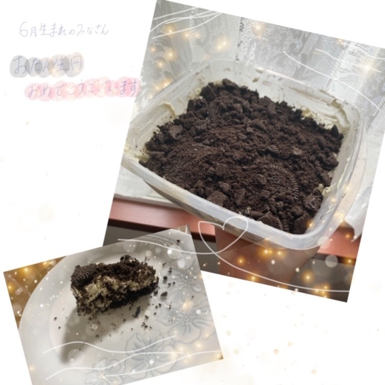

2020/0627Satやさしさ。佐藤璃果
こんにちは~☺︎
6月27日(土)
お元気ですか？
乃木坂46 新4期生 岩手県出身
佐藤璃果です。
紫陽花！！！♡
6月は紫陽花という感じがしますよね。
なぜでしょう。
"紫陽花は雨に濡れている方が美しいんだよ"
そういう話をしてもらって、なるほどな
と思った私です。
雨に濡れていることで、
花びらが反射でキラキラ光り
輝いているように見える。
色に深みがでるな、と思いました。
調べてみて、紫陽花には色ごとに、
花言葉があることがわかりました。
白い紫陽花:『寛容』
青い紫陽花: 『辛抱強い愛情』『強い愛情』
ピンクの紫陽花:『元気な女性』
らしいです。

とてもシュールな画像たち。
雨の季節。(´._.`)
*****************************************

たまたま居た4人で撮りました。
いつか16人で写真を撮れる日が来るといいな。
新4期のなかで居ないのなおちゃんだけだ...
申し訳ない。また今度、撮ろうね！
なおちゃんに申し訳ないので
エピソードトークをしたいと思います！
なおちゃんは話を聞く時に
「分かるぅ~」
と言っている時の瞬き長めのことが多いです。
人の話をよく聞いているというのが
伝わってきます。素敵です。
せつめいむずかしい。
前回の続きを！
3日目の朝。新4期生の5人での30分間を、
2日目に続き頂きました。
昨日の反省を活かして、
もっと周りを見るようにして、
話す事だけが全てじゃないので、
気をつけました。
ダミヘ、ドキドキでした(ㆆ_ㆆ)
みんなのを、聞いて胸が
ドックンバックンしました。
ヘッドフォンの音質も良すぎて余計に。
みんないい声してるなぁ、
*****************************************
そして最後に、
ライブがありました！
最初の裸足でSummer、
自分のタオルを掲げて、歌うのは新鮮でした。
ライブビューイングで行った
乃木坂46 7th YEAR BIRTHDAY LIVE
の時は、西野七瀬さんのタオルを掲げて、
コールしていましたので。
そして、ユニットに別れての
先輩方のライブ。素敵でした。
一人一人がキラキラと輝いていて、
熱量が凄くて、
初めて披露される曲、
大好きな曲が沢山ありました。
「Sing Out」と「世界中の隣人よ」に
私達も参加させて頂きました。
ありがとうございます。
初めて乃木坂46の1人として
参加出来た日なので
忘れることはないです。
*****************************************
ちょっと裏話。
「のぎおび」でも大園桃子さんが
言ってらっしゃったように、
ライブで失敗してしまってずっと心苦しくて
全員に謝りたかったんですけど、
いい空気を壊すのもなということで、
マネージャーさんにだけ謝りに行ったら、
3期生の皆さんのところに連れて行ってくださって、
先輩方が温かい言葉をくれたんです。
本当にありがとうございました。
家に帰ってからも、心苦しかったところに、
大好きな、とある先輩からご連絡を頂き、
また助けて頂きました。
泣かないようにしてきたので、
本当にお恥ずかしいです...
皆さんから頂いた優しさを、
忘れずに私も優しさを伝染して行けるように
心に留めておきたいと思います。
3期生の先輩方、
ありがとうございました！
*****************************************

(あまり上手く切り分けられなかったので、
キラキラさせてみた。)
そして、ギリギリになってしまいましたが、
6月生まれの皆さん、
お誕生日おめでとうございます。
素敵な一年になりますように。
今回はオレオチーズケーキです。
ずっと作ってみたかったのですʕ๑•ɷ•๑ʔ
我が家には電動泡立て器がないので、
手動で泡立てるのが難点でしたね、
いつも電動泡立て器を買おうとするのですが
悩んで悩んで諦めます。
あっホットサンドメーカーも頼もうとして、
諦めてた( ´ ꒳ ` )
*****************************************
沢山の心温まるメッセージ、
ありがとうございます。
皆さんの忙しい日々の中で、
私にコメントを書いてくれたり、
読んでくださったり、
しているのをよく想像します。
言葉には大きな力がある。
何度も思ってきました、
いつもありがとうございます。
沢山の優しさをありがとうございます。
感謝の想いって伝わってますか？
文字に想いを込めて、届けっ！えーいっ！
次の回で質問コーナー再びしたい
と思います。
どきどき。
待ってます。
*****************************************
明日はるなぴです。
るなちゃんにブースに沢山あった
白目マークの書き方のコツを今度教えて欲しいな( ˊ꒳ˋ ) ᐝ
*****************************************
皆さんにとって今日が
素敵な一日になりますように。

このTシャツお気に入りです☺︎
それではまた~
#13 ❁ り か ❁
コメント(461)
紫陽花綺麗ですね
花言葉全然知らなかったです
教えてくれてありがとうございます
46時間TVお疲れ様でした！
お菓子の家も朝のコーナーも見てて楽しかったです
これからも色んな場所で、活躍する璃果ちゃんを見てみたいです
またの更新楽しみにしていますね
紫陽花いいよねー
僕の家の庭にも紫陽花あって結構綺麗
一番好きな花かな〜
ダミヘめっちゃ良かったよ！
可愛い声だった笑
いつかりかちゃんのタオル掲げてライブみたいなー
ブログ更新ありがとう～
紫陽花は青紫が好きだな～
梅雨が来たって感じがする。
3期生と仲良くできてよかったね。
1期、2期とも徐々に仲良くなっていってくださいね。
あ、璃果ちゃんのポストカード手に入れたよ～
飾ってます。
～質問～
次の46時間TVで、電視台をやるとしたら何をしますか？
紫陽花の写真のりかちゃん、本当にかわいいですね。私は特に１枚目が好きです。
3日目の朝のダミはとてもよかったよ。私も録画して、毎朝イヤホンで聞いてます。りかちゃんもとてもいい声してたよ。
ライブはちょっと失敗したかもしれないけど、私からすれば、とてもよかったよ。はじめてだから緊張してた気もしれないけど、これからこれから頑張っていけばいいからね。３期生の先輩たちも優しくてよかったですね。
今日もブログ読んでくれてありがとうね！
次の回の質問コーナー楽しみにしてるね。
じゃ、また5日後に
ぱと◢璃果坂より
紫陽花と璃果ちゃん映えすぎてる！笑
質問！カラスは好きですか？
次回も楽しみにしてるね！
昨日も今日もコメントしたりのんです(Ü)
本当にブログ更新ありがとう！！
紫陽花とのお写真素敵すぎて素敵です:(；＿；)
4分割璃果ちゃん好きです！
◎雨の季節と書いてあるところの絵文字が悲しそうだったけどやっぱり梅雨は苦手ですか？
16人のお写真首を長くして待ってます☺︎
璃果ちゃんだいすき！
今回はこの辺で！
またコメントするね！
ʕ•ᴥ•ʔʕ•ᴥ•ʔʕ•ᴥ•ʔʕ•ᴥ•ʔʕ•ᴥ•ʔʕ•ᴥ•ʔʕ•ᴥ•ʔʕ•ᴥ•ʔʕ•ᴥ•ʔʕ•ᴥ•ʔʕ•ᴥ•ʔ
ばいばい( ^_^)/
りのん
紫陽花との璃果ちゃんなんて可愛いんだ、、
謎めいた雰囲気を醸し出しながらもその清楚な笑顔
とのマッチ。
最高です。今週も頑張ります。
46時間TVお疲れ様でした！
4期生コーナー、朝の場つなぎトーク、ツーショットトークいろんなとこで璃果ちゃんでてきて嬉しかった！
特にツーショットトークでかずみんと話したりして、
少しは仲良くなれたかな？！
もっと他の人に璃果ちゃんの魅力が伝わると良いな！
初めてのライブ。
ステージではないけど、ブースにいてもライブはライブ。
輝いて見えました。
次はステージの上で見れること祈ってます。
色んな失敗しても次に繋げればいいからね！
そんな璃果ちゃんを自分は応援したいから！
また次回〜
☆質問☆
1.かき氷は何味派？
チャァオ～～!☆彡
りかちゃん、お疲れ様です❕❤️❤️❤️❤️❤️笑顔❇️❇️❇️
大変だねぇ～～～⤴️⤴️⤴️❕❤️❤️❤️❤️❤️笑顔
よく頑張ったねぇ～～～⤴️⤴️⤴️❕❤️❤️❤️❤️❤️笑顔
謝るのは、自分が成長している証拠だよ～～～❕❤️❤️❤️❤️❤️笑顔❇️❇️❇️
世の中～～きちんと謝ることは、とっても・とっても大切なお仕事のイチ部だよ～～❕❤️❤️❤️❤️❤️笑顔❇️❇️❇️
しっかり謝ることは～～
また次に繋がる、とっても大切なことなんだよ～～～❕❤️❤️❤️❤️❤️笑顔
りかちゃん、頑張ったねぇ❕❤️❤️❤️❤️❤️笑顔
だから、そんなに気にしないでこれからも頑張ってねぇ～～～⤴️⤴️⤴️❕❤️❤️❤️❤️❤️笑顔
(＠＾▽゜＠）ゞ❤️❤️❤️
❇️❇️おすまし！⚜️❇️⭐彡
感謝の想いきちんと伝わってますよ！
今日もまた自撮りが天使で見ているこっちは幸せな気分になりました。
璃果ちゃん1人でも輝いてるけど乃木坂46の璃果ちゃんは輝きが倍になるって思いました！
ありがとうございます。ダミヘでは璃果ちゃんの可愛い声を聞くことが出来てたまらなかったです笑 ごちそうさまです笑笑
璃果ちゃんって料理ほんとに上手だよね\(ᯅ̈ )/
凄い本当に美味しそう！食べてみたい、、
やっぱ優しい先輩がいるっていい事だね！絶対乃木坂の先輩達は璃果ちゃん達、4期生を支えてくれるし！うん本当に良いグループって改めて感じた！
質問〇璃果ちゃんオレオチーズケーキの味を五-七-五 でお願いします！
〇璃果ちゃんは46時間TVの4期生の朝の企画の時は何時起きだったの？？
〇璃果ちゃんは白目できないの？？
蒸し暑い日が続くけど体調には気を付けてね！
より良い日々になりますように！
そして璃果ちゃんのアイドル人生が上り坂でありますように！
ゴードンでした！
オレオチーズケーキ美味しそう
璃果ちゃんスイーツも料理もめっちゃ
上手じゃない？(笑)習ってた？
今回も本当にありがと〜
次回もよろしくねっ！
思いの一つ一つは連鎖反応のようにその人の人生を飾っていく。
大切なことは贅肉が削ぎ落とされた大切な何かを大切にしていくことだと思う。
タイトルのやさしさから思いついたことをコメントしてみたぜ。
今日も頑張っていこう(*´ω｀*)
４６時間TVからもう一週間だね！
ライブ、久しぶりでソワソワしたよ。
そうだね。
紫陽花は雨が似合う花だね。
梅雨時の花って感じするもん。
ーーーー
なんか新4期の5人の個性がどんどん出てきてていいね。
ダミヘのコーナーはやっぱり朝からじゃ刺激が強すぎますね笑耳がどっかに飛んでいきました。でも、またやってほしいなって思います！
次回の更新も楽しみにしてます！
46時間テレビは最初から最後まで、とても面白くて、感動しました。
毎日、新四期生のブログリレーで、元気をもらえています。
今度、英検があるので、エールください‼︎
今日も昨日もコメントしたりのんです(Ü)
すごく聞きたいのですが、、、
◎最後の写真のTシャツは与田ちゃんとお揃いですか？
次のブログでの答え合わせ勝手に待ってますね(え)
┈┈┈┈┈┈┈ ❁ ❁ ❁ ┈┈┈┈┈┈┈┈
璃果ちゃん×紫陽花
素敵すぎます(；＿；)
このお写真本当に好きです☺︎☺︎
◎最近より天使になりましたか？
今回はこの辺で！
またコメントするね！
ʕ•ᴥ•ʔʕ•ᴥ•ʔʕ•ᴥ•ʔʕ•ᴥ•ʔʕ•ᴥ•ʔʕ•ᴥ•ʔʕ•ᴥ•ʔʕ•ᴥ•ʔʕ•ᴥ•ʔʕ•ᴥ•ʔʕ•ᴥ•ʔ
ばいばい( ^_^)/
りのん
かわいいりかちゃんは紫陽花も似合うね〜〜
課題やったらまたコメント書くね！
ゆめくんより
46時間の時に桃ちゃんに励ましてもらったみたいやね！璃果ちゃん責任感が強い子なんやなって思った。周りにそうゆう優しい先輩がいるってすばらしいね！
紫陽花と璃果ちゃんの組み合わせ似合ってたで！
質問
最近欲しいものってある？
4期生と誰か話せた？
46時間テレビの朝は目覚めよかった？
乃木坂入る前ってどんな服着てた？
大学生の僕に勉強がんばれる一言をください！
璃果ちゃんブログ更新ありがとう〜！
6月って雨が多いから苦手なんやけど璃果ちゃんはどーかな？？
もう6月も終わりって考えるとあっという間だよね笑
質問なんだけど、璃果ちゃんは残り半年で何かやりたいこととかあるの？？
んじゃもう6月も終わるけど、こっからまた頑張っていこー
今日はシンプルに
「じゃん」は使いますか？
自分は神奈川県民なので知らない内に使ってます
またね
いつもコメントしようと思って、おもって、出来てないから今日こそは！！
大体、コメントしようとした日に限って、璃果ちゃんのブログ更新の前日で、｢あー、読んでくれないかもしれないから明日やろう。。｣みたいな感じ笑（おい、明日やろうは馬鹿野郎だぞ）
だから後で、溜まりに溜まった愛をコメントに吐き出していこうと思います笑
ライブとても良かったですよー。
失敗しちゃったんですね。けど失敗は誰でもありますよー。
七瀬さん推しだったのかな？
46時間TVお疲れ様！
かずみんとの2ショットトーク良かったよー
朝早い時間帯での新4期生トークも楽しかった！
璃果ちゃんからの感謝はいっぱい届いてるし、逆にこっちごもう感謝したいぐらいよ！！いつも楽しませてくれるブログありがとね。
5日後も楽しみに待ってるね。
これがエモいってやつやな(？)
まだ6月なのに暑すぎるですがぁ！？
46時間TVの影響で生活リズムが崩れちゃったけど、最近また整ってきたんよ〜。
夜の11時に寝てます(えらい)
お菓子作りはもはやプロ。
僕は自粛期間で太ってしまったので、誘惑しないでください(震え)
おっと。感謝の想い飛んできた。
ブログを読むのも楽しいけど、書くのも楽しいまである。
質問
〇日焼け止めって外出しない時も塗ってますか？
次は7月！！！
りかちゃん推しの東北住みの女子高生です。
りかちゃんのメイクを詳しく知りたいので紹介してくれたら嬉しいです
次のブログ更新も楽しみにしてます！
りかちゃんは傘が似合うね
僕も仕事で失敗してばっかりだけど、その度に周りの先輩が助けてくれます。
乃木坂にも助けてくれる優しい先輩が沢山いるんじゃないかな？
失敗を恐れず色んなことにチャレンジして欲しいな。
その姿を見て僕達も頑張ることができます。
頑張ってね！
それと、ライブでタオル上下逆にしてたの可愛すぎて私的にはめちゃくちゃ良かったんだけど、ちゃんと反省してたのがもう偉すぎるよノーベル賞すぎるよ、、、
りかちゃんと同じ歳でめっちゃうれしいです！！
これからもお仕事頑張ってください！！
紫陽花の花言葉知らなかったぁ素敵な花言葉だねぇ！！
可愛すぎる！！
先週コメント出来なかったのでその分もまとめて後でコメントしますね！
れい
ほんとに可愛い大好きです！
ちなみにありがとうございま璃果！！っていうのは私が勝手に流行らせようとしているだけなんですけど璃果ちゃん的にはいかがでしょうかね！！！
璃果ちゃんファンの間では｢流行らないからやめとけ｣と言われておりますが私はめげません璃果ちゃん愛してる！！！！！
暑い日が続きますが、気をつけて頑張ってくださいね
会える日を楽しみにしています
46時間TVお疲れ様でしたー
失敗は誰にでもあることなので次失敗しないように気をつければ大丈夫だよ！
失敗しない人はいないんだからね
ずっと応援してます！
いろんなことがあると思うけど頑張ってね！
いつみても可愛いい。
次回も楽しみにしてます‼️
コメントする

PROFILE
新4期生リレー
202104
| SUN | MON | TUE | WED | THU | FRI | SAT |
|---|---|---|---|---|---|---|
| 1 | 2 | 3 | ||||
| 4 | 5 | 6 | 7 | 8 | 9 | 10 |
| 11 | 12 | 13 | 14 | 15 | 16 | 17 |
| 18 | 19 | 20 | 21 | 22 | 23 | 24 |
| 25 | 26 | 27 | 28 | 29 | 30 | |

乃木坂はまだですが欅坂と日向坂の新メンバーはメッセージアプリ始まるみたいですね！璃果ちゃんはブログやモバメのハッシュタグこれを使ってほしいな！っていうのありますか？
あったら是非教えてください
次のブログも楽しみにしてます